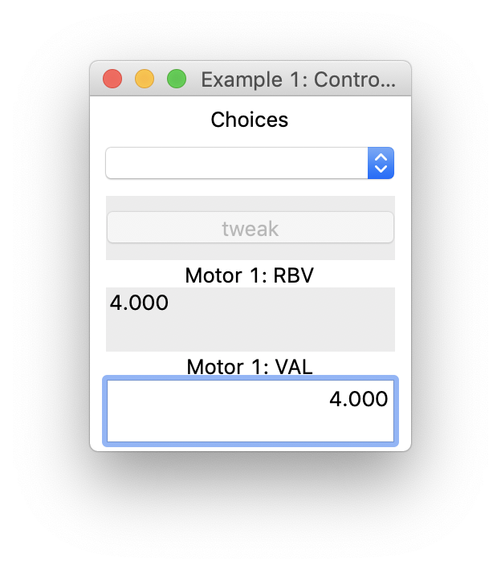

Example 1¶
Consists of:
Mock motor record
Server (middle man)
GUI
Client
Two codes need to be running in to different shellsterminals. make sure to change directory to the directory with example_1 codes.
Two start a mock motors
run example_1_motor.py
You should see something similar to the following 5 lines:
[[User user$ ipython3 caproto_sandbox/example_1_motor.py
[I 00:54:27.859 server: 162] Asyncio server starting up...
[I 00:54:27.860 server: 175] Listening on 0.0.0.0:63591
[I 00:54:27.861 server: 261] Server startup complete.
* request method called at server startup @start.startup
The mock motor is running now. Next step, start the server.
run example_1_server.py
[I 00:57:13.714 server: 162] Asyncio server starting up...
[I 00:57:13.715 server: 175] Listening on 0.0.0.0:50377
[I 00:57:13.716 server: 261] Server startup complete.
To start Grahical user interface run the following command:
run example_1_server.py
You will get a panel that looks like this;
{kind=link}
Mock motor record¶
Simple mock motor record with three PVs: VAL, RBV and running.
Server¶
There are three python classes in the file. The “Server” is a caproto PVGroup class and Choices, Motors are client classes that provide simple interface.
-
class
caproto_sandbox.example_1_server.Choices[source]¶ Bases:
object-
callback_monitor(self, sub, response=None)[source]¶ monitor callback functnio will be executed when a PV is written into.
-
db= <ubcs_auxiliary.saved_property.DataBase object>¶
-
property
saved_positions¶ getter for SavedProperty. returns saved value if it exists in the database, otherwise returns default_value
- Parameters
- name :: (string)
name of the entry in the database.
- Returns
- value :: (object)
returns a value stored with the selected key in the database
Examples
>>>
-
property
tweak_pos_value¶ getter for SavedProperty. returns saved value if it exists in the database, otherwise returns default_value
- Parameters
- name :: (string)
name of the entry in the database.
- Returns
- value :: (object)
returns a value stored with the selected key in the database
Examples
>>>
-
-
class
caproto_sandbox.example_1_server.Motors[source]¶ Bases:
objectMotor client object. Connects to selected PVs
-
db= <ubcs_auxiliary.saved_property.DataBase object>¶
-
property
tweak_pos_value¶ getter for SavedProperty. returns saved value if it exists in the database, otherwise returns default_value
- Parameters
- name :: (string)
name of the entry in the database.
- Returns
- value :: (object)
returns a value stored with the selected key in the database
Examples
>>>
-
-
class
caproto_sandbox.example_1_server.Server(prefix, *, macros=None, parent=None, name=None)[source]¶ Bases:
caproto.server.server.PVGroup-
choices= PVSpec(get=None, put=<function Server.choices>, startup=<function Server.choices>, shutdown=None, attr='choices', name='choices', dtype=<ChannelType.ENUM: 3>, value=' ', max_length=None, alarm_group=None, read_only=None, doc=None, fields=(), cls_kwargs={'enum_strings': ['Insert', 'Retract', ' ']})¶
-
enum_strings= ['Insert', 'Retract', ' ']¶
-
io_put_queue= None¶
-
jog= PVSpec(get=<function Server.jog>, put=<function Server.jog>, startup=None, shutdown=None, attr='jog', name='jog', dtype=<class 'float'>, value=0.0, max_length=None, alarm_group=None, read_only=None, doc=None, fields=(), cls_kwargs={})¶
-
running= PVSpec(get=None, put=None, startup=<function Server.running>, shutdown=None, attr='running', name='running', dtype=<class 'int'>, value=1, max_length=None, alarm_group=None, read_only=None, doc=None, fields=(), cls_kwargs={})¶
-
The Motors class has two PVs hard-coded: BEAMLINE:motor.RBV and BEAMLINE:motor.VAL. it subscribes to PVs and act if new values is posted. The arrival of new value calls a callback function.